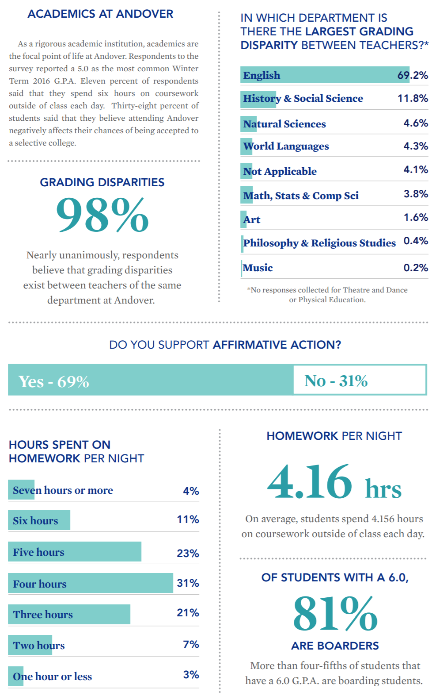

sota.js
An easy-to-use, beautiful, d3.js-based charting library
What is sota.js?
sota.js is a charting library originally made for The Phillipian's State of the Academy survery (hence SOTA). Based on d3.js, it's designed to be:
- Beautiful
- Super easy to use for future Phillipian boards and other publications
Why was sota.js made?
The Phillipian is Phillips Academy's student newspaper, and State of the Academy is an extensive survey of the student body that the paper conducts each year, with analyzed results published in print and online.
The print paper is painstakingly put together each year by a team of talented designers, following the lead of then Executive Digital Editor Ally Klionksy's 2016 design:
The online edition in past years, on the other hand, has looked something like this:

Functional, but a far cry from the visual craftsmanship of the print designs. On top of this, the code for the site was rebuilt almost every year, costing lots of unnecessary time and introducing technical issues.
sota.js aims to provide a better solution, building not only a SOTA 2020 site as beautiful as the print paper, but also a framework that could be easily used by future Phillipian developers or even other publications.
sota.js on GitHub
Download sota.js and find its complete documentation on GitHub:
What does a graph look like?
What does the code for that graph look like?
sota.barChart({
selector: "#graph-demo",
dataFile: "data/demo",
totalResp: 100});
Or, generating the whole .sota-module block:
sota.barChart({
title: "What does a graph look like?",
subtitle: "SOTA prettiness:",
section: "sotajs",
dataFile: "data/demo", totalResp: 100});
data/demo.csv looks like this:
label,value Before sota.js,10 After sota.js,100
Find the full reference on the GitHub repo.
Show me more!
Setting up sota.js
See the full reference on the GitHub repo! sota.js can be used to generate a standalone chart, or an entire page like this one. Here's how to do the latter:
1. Include d3.js, masonry.js (if using layout), and sota.js in the head of your project:
<script src="https://unpkg.com/d3@5.16.0/dist/d3.min.js"> <script src="https://unpkg.com/masonry-layout@4/dist/masonry.pkgd.min.js"> <script src="PATH/TO/sota.min.js">
2. Set sotaConfig sections and run setup functions:
sota.sotaConfig.sections = [
{"slug": "sotajs",
"name": "sota.js",
"colors": sota.colorInterpolate("#000000")},
{"slug": "charts",
"name": "Chart Gallery",
"blurb": "Gallery of all the charts you can make with sota.js",
"colors": sota.colorInterpolate("#660066", "#dac7d8", 5, true)}
]
sota.setColors(sota.sotaConfig);
sota.setStyles(sota.sotaConfig);
sota.createSections(sota.sotaConfig);
sota.sotaNavbar(sota.sotaConfig, "sota.js Demo", "szlogo.png", false, "https://www.samsonzhang.com/");
3. Run chart-rendering functions and sotaMasonry inside a window.onload loop:
window.onload = () => {
sota.barChart({selector: "#graph-demo", dataFile: "data/demo", totalResp: 100});
sota.pieChart({selector: "#graph-demo-pie", dataFile: "data/community"});
...
sota.sotaMasonry();
}